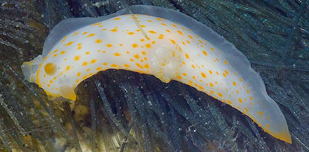
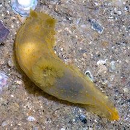
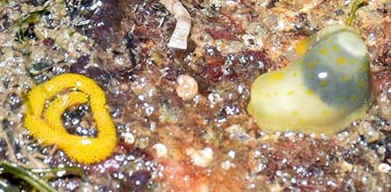
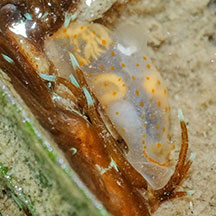
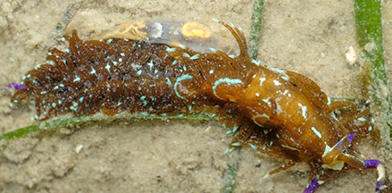
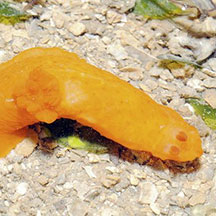

|
|
| nudibranchs text index | photo index |
| Phylum Mollusca > Class Gastropoda > sea slugs > Order Nudibranchia |
| Yellow-spotted
gymnodoris nudibranchs Gymnodoris sp.* Family Gymnodorididae updated May 2020 Where seen? These small nudibranchs with tiny yellow spots are sometimes seen on some of our shores. Features: 1-2cm long. Body slender white, yellow or orange with yellow spots. |
 Sisters Island, Jan 06 |
 Changi, Jun 06 |
| There are several species of gymnodoris nudibranchs with yellow spots
and they are rather difficult to tell apart in the field. Gymnodoris ceylonica: According to Bill Rudman, it has a translucent white body with small bright orange-red spots; large gills with orange lines. It preys on the Long-tailed hairy sea hare (Stylocheilus longicauda). This nudibranch lays eggs in 'strings' that look more like sea hare egg masses. It is widespread in the Indo-West Pacific. Gymnodoris alba: According to Bill Rudman, white with orange spots; an orange border on the mantle at the head, end of the foot has an orange tip, gills translucent, rhinophores translucted tipped orange. One was reported eating an aeolid nudibranch. Gymnodoris citrina: According to Bill Rudman, they even cannibalise one another. In fact, during reproduction, one will eat the other as they mate! Gymnodoris inornata: According to Bill Rudman, it ranges in colour from translucent yellow to deep reddish orange with slightly raised darker coloured bumps. |
 Just laid egg string? Sentosa Tg Rimau, Nov 21 Photo shared by Lok Kok Sheng on facebook. |
 Attempting to eat the larger nudibranch? Lazarus (Eagle Bay), Nov 22 Photo shared by James Koh on facebook. |
 Attempting to eat the larger Blue Dragon nudibranch? Lazarus (Eagle Bay), Nov 22 Photo shared by James Koh on facebook. |
| What do they eat? Gymnodoris species are described to be 'voracious predators' of other sea slugs like nudibranchs, sacoglossans and sea hares. |
| Gymnodoris eating another nudibranch! Filmed diving at Pulau Hantu, Oct 2019 |
*Species are difficult to positively identify without close examination.
On this website, they are grouped by external features for convenience of display.
| Yellow-spotted gymnodoris nudibranchs on Singapore shores |
On wildsingapore
flickr
|
| Other sightings on Singapore shores |
 Pulau Sekudu, Oct 11 Photo shared by Loh Kok Sheng on flickr. |
||
Links
|